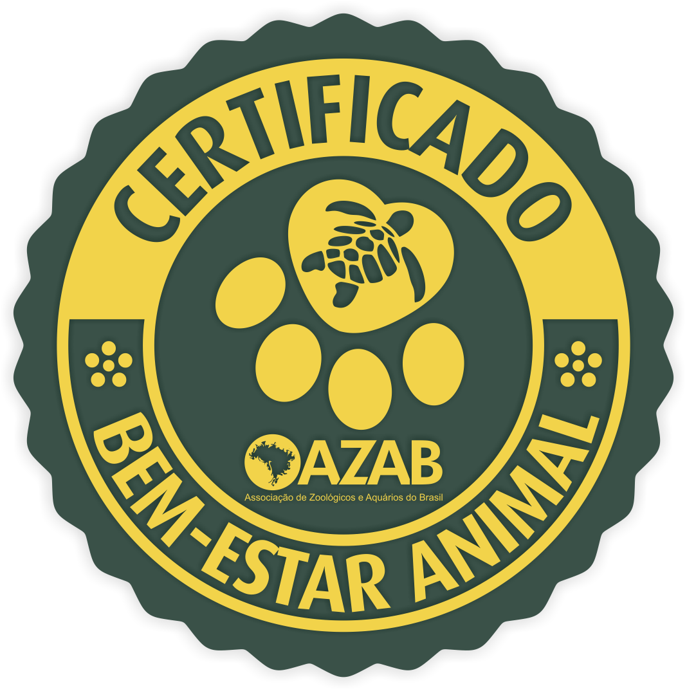

Certificação em Bem-Estar Animal
Auditoria e certificação para o mais alto padrão de bem-estar animal

Welfare
Promover o bem-estar animal é condição fundamental para qualquer instituição que mantém animais sob seus cuidados.
Por este motivo, a AZAB, em parceria com a renomada ONG internacional Wild Welfare, estabeleceu um processo de certificação em bem-estar animal para seus associados.
A Certificação tem como base de avaliação uma Norma criada a partir de conhecimentos atuais referente aos requisitos de bem-estar animal em zoológicos e aquários.
O processo inclui auditoria das instituições, realizada através da análise de documentação e inspeção das instalações e condições de manejo dos animais.
Na Norma utilizada estão incluídos os princípios e consequentes práticas dos zoológicos e aquários modernos:
Através de seu Programa de Certificação a AZAB espera criar melhores condições de manejo por seus Associados visando o bem-estar de todos os animais sob seus cuidados.
Princípios dos zoológicos e aquários modernos
- Proporcionar um ambiente estimulante para os animais, baseado no conhecimento de sua biologia, comportamento e ecossistema natural, que:
- — Considere apropriadamente suas habilidades cognitivas;
- — Permita que se comportem e se exercitem de forma natural;
- — Proteja sua saúde e segurança; e
- — Ofereça estímulos físicos e sociais adequados à espécie em todos os momentos.
- Proporcionar um ambiente adequado de apoio para os animais, funcionários e para o público.
- Proporcionar condições para oportunidades educacionais de aprendizado sobre conservação, bem-estar animal e seus hábitos naturais.
- As instituições devem empregar ou estar preparadas para treinar a equipe para ser adequadamente experiente no cuidado dos animais alojados na instituição.
- O número de animais sob os cuidados da Instituição não deve exceder sua capacidade de manter um alto padrão de cuidado e bem-estar. Somente animais que possam ser adequadamente alojados e manejados ao longo de toda a vida devem ser integrados à população animal.

Quem conduz a certificação
O Comitê de Certificação tem como objetivo conduzir os processos de Auditoria e Certificação em Bem-estar animal.
O Comitê de Certificação da Associação de Zoológicos e Aquários do Brasil – AZAB tem como objetivo apoiar a Instituição na condução do Programa de Certificação em Bem-estar Animal, tanto em relação ao planejamento de ações, quanto na realização das auditorias e elaboração de relatórios de avaliação.
Um compromisso com o bem-estar animal
Através do Programa de Certificação, a AZAB estimula melhores condições de manejo para todos os animais sob cuidados de seus associados.